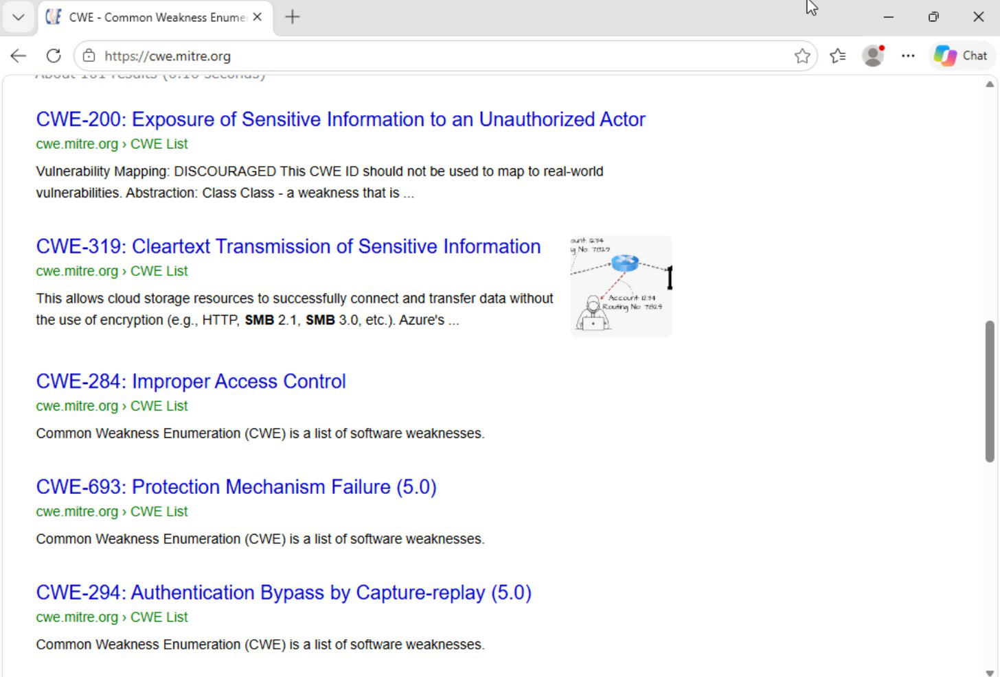
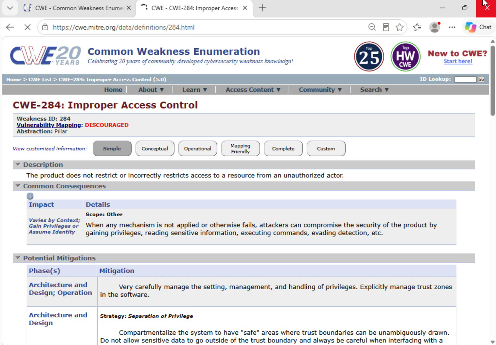
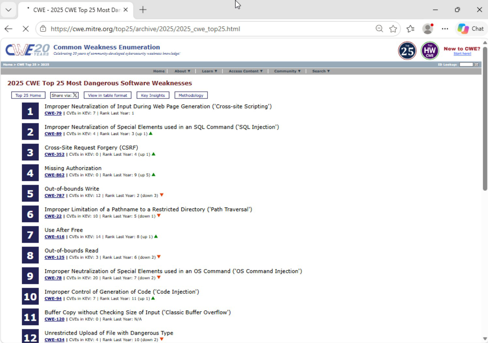
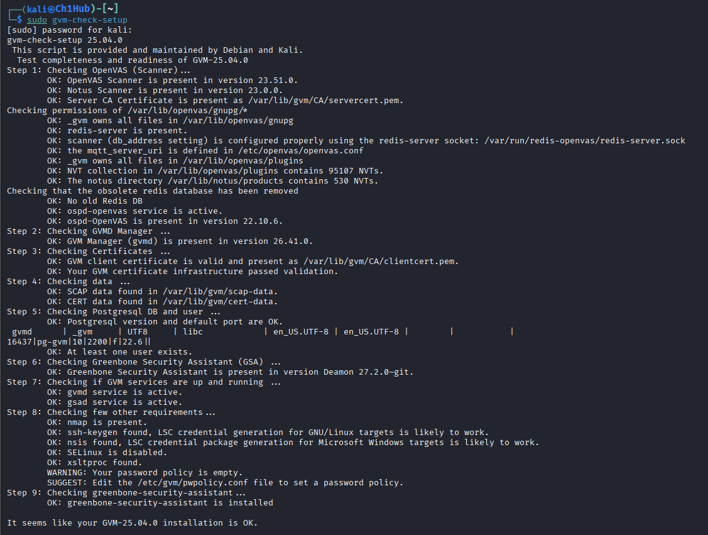
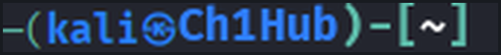
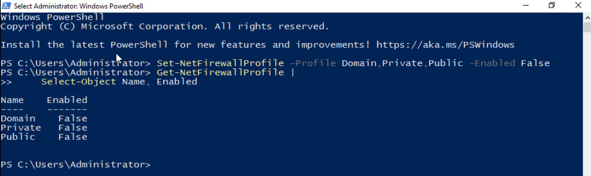
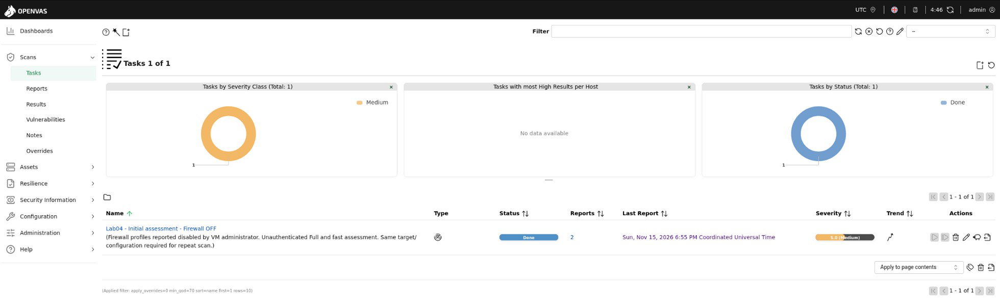
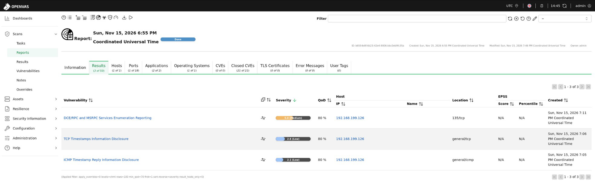

An evidence-based assessment of a Windows Server 2022 host, combining MITRE CWE research with an unauthenticated OpenVAS baseline scan.
One Windows Server 2022 host was assessed with OpenVAS while Windows Defender Firewall was disabled. The baseline displayed three findings; the planned Firewall ON comparison was not completed.
The laboratory has two connected aims: understand how MITRE CWE classifies software weaknesses, and measure what OpenVAS can see on a Windows Server 2022 host before and after Windows Defender Firewall is enabled.
The intended experiment is a like-for-like comparison. The baseline scan is run with the firewall disabled; the second scan is run with the firewall enabled, using the same target and scan configuration. Only the first of those measurements was completed.
The lab sheet supplies example VM addresses. This report instead uses 192.168.199.126, the address that appears in the supplied scan results. Scanning was unauthenticated and used the Full and Fast configuration.
No exploitation is claimed. Reported items are limited to what the scanner displayed and to the screenshots supplied with the laboratory material.
MITRE CWE was used to build a vocabulary for weakness classes before looking at scanner output. The database describes categories; it does not assert that a particular host is vulnerable.
The CWE site was used to review SMB-related search results, and CWE-284, Improper Access Control, was opened for review. The entry describes weaknesses in how access to a resource is restricted, together with consequences and mitigations. This framing matters: a CWE entry can help name a class of weakness, but only target-specific evidence can support a claim about the target.


The 2025 CWE Top 25 was reviewed as requested. It is a prioritized reference for commonly dangerous software weaknesses, not a finding list for the assessed host.
The list is useful for prioritization and for naming weakness classes consistently. It does not replace target-specific evidence, and its rankings are not a prediction that a given system contains those weaknesses.

Two preparation checks are documented: the GVM installation on the Kali host, and the firewall state on the Windows target.
The Kali terminal output records a successful gvm-check-setup run (GVM 25.04.0). The OpenVAS dashboard records the initial task in the Done state. A PowerShell capture documents that Domain, Private and Public profiles were disabled for the baseline.



The baseline task, “Lab04 - Initial assessment - Firewall OFF”, was an unauthenticated Full and Fast assessment of one host. It reached Done.
The report lists three findings on 192.168.199.126 and records a maximum severity of 5.0 (Medium). Counts reflect only the three results visible in the supplied screenshots.


| Severity | Finding | Affected location |
|---|---|---|
| 5.0 · Medium | DCE/RPC and MSRPC Services Enumeration Reporting |
135/tcp |
| 2.6 · Low | TCP Timestamps Information Disclosure |
general/tcp |
| 2.1 · Low | ICMP Timestamp Reply Information Disclosure |
general/icmp |
The planned second OpenVAS scan with Windows Defender Firewall enabled was not completed because of insufficient time during the laboratory session. No Firewall ON results are available.
The supplied completed task and report screenshots document only the Firewall OFF baseline. The table therefore records a missing measurement, not an observed absence of findings.
| Measure | Firewall OFF · documented | Firewall ON |
|---|---|---|
| Completed scan | Yes · Done | Not performedtime constraints |
| Target host | 192.168.199.126 | |
| Displayed findings | 3 | |
| Medium findings | 1 | |
| Low findings | 2 | |
| Maximum displayed score | 5.0 |
This is a limitation of the practical work, not evidence that the firewall has no effect. A valid comparison would require enabling Windows Defender Firewall and running a separate, completed scan with the same target and scan configuration. Any change in reported findings would also need to be interpreted in light of possible changes in scanner visibility.
The baseline supports a focused set of actions. They prioritize exposure reduction, routine hygiene, and a repeatable way to close the missing comparison.
Limit RPC exposure to trusted hosts and the network segments that require it.
Assess unnecessary Windows services and remove or disable what the role does not require.
Keep the Windows Server 2022 target current with security updates.
Review information-disclosure findings alongside the services and configuration that produce them.
Retain Windows Defender Firewall enabled except for isolated baseline measurements.
Validate significant findings and preserve both scan reports for a like-for-like comparison.
These steps reproduce the Firewall ON half of the experiment; they do not imply a result.
The CWE research and initial OpenVAS assessment were completed and documented. The initial scan displayed three findings on Windows Server 2022, with a maximum severity of Medium (5.0). The second assessment with Windows Defender Firewall enabled could not be performed because of time constraints.
For that reason, this report makes no conclusion about the firewall's effect on vulnerability detection.
The report relies on the following captured figures. Each is a screenshot reproduced from the supplied laboratory evidence.
| Fig. | Evidence | What it supports | Section |
|---|---|---|---|
| 01 | MITRE CWE search results | SMB-related search results and the CWE-284 entry | §2 |
| 02 | CWE-284 definition page | Description, consequences and mitigations | §2 |
| 03 | 2025 CWE Top 25 | Prioritized weakness reference | §3 |
| 04 | gvm-check-setup output | GVM 25.04.0 installation diagnostics on Kali host Ch1Hub | §4 |
| 05 | PowerShell firewall output | Domain, Private and Public profiles disabled | §4 |
| 06 | OpenVAS task dashboard | Completed baseline; maximum severity 5.0 | §5 |
| 07 | OpenVAS report results | Three findings on 192.168.199.126 | §5 |
Lab Sheet N° 4 — Vulnerability Analysis (2026/2027), and the screenshots in the supplied Google Doc “Lab04 Report Ethical Hacking.”
All findings are limited to the supplied screenshots. No Firewall ON scan exists to compare, and no exploitation is claimed; findings remain scanner-reported observations.